SEANET 2003

Johor Bahru Malaysia
27.Nov-30.Nov.2003
31th Annual SEANET Convention
|
◎ 第31回SEANET Convention 2003(South East Asia Net Convention)が11月27日-30日の4日間、
西マレーシア(9M2)のジョホール・バル(Johor bahru)で開催された。
ジョホール・バルはマレー半島の南端に位置するシンガポール(9V1)に接する国境の街。
1855年にイスラム教の君主スルタン・アブ・バカールによって造られたこの街は多くのイスラムの伝統を残した古い建物にも触れる事が出来る。
今回のSEANET Conventionは昨年のオーストラリア・パース(VK6)から引き継いで行われたが、
今大会では記念局の"9M0SEA"と大会期間中に行われた"CQ WW Contest(CW)"で9M4JBの2局が運用された。
マレーシアで"9M4"のコールサインが使用されるのは珍しく、WPXには貴重な運用だった。
9M0SEAからの6m運用はアンテナ建設が出来ず今回は中止された。 "9M0"のコールサインは今後もマレーシア国内全域での特別局の運用に使用されるため、 9M0=Spratly (Layang Layang)とは限らないので運用地の確認が必要。 SEANET CONVENTION 2003 |
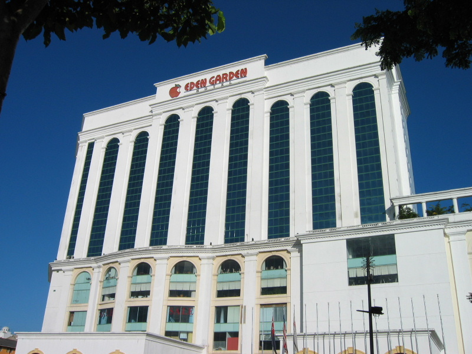
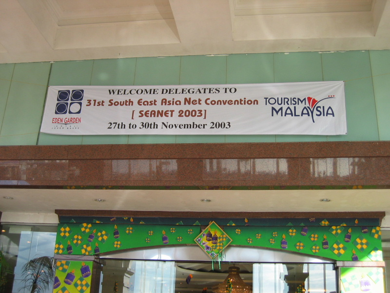
◎ SEANET Programes
27th November(Thursday) 2003
Evening: Warming Up Dutch Party
28th November(Friday) 2003
Morning: Bus Tour fruit Farm Lunch. Visit to Kota Tinggi Waterfalls.
Evening: Riverside Dinner. Fireflies river boat ride.
29th November(Saturday) 2003
Morning: Tour of Wheels Electronics. Tour of Royal Museum. Lunch at Ponderosa.
Afternoon: Free Shopping time.
Evening: Gala Dinner(Eden Garden Hotel).
30th November(Sunday) 2003
Morning: "WARC 2003" by HL1IFM
"The Fuel Cell" by 9M2PL
Plenary Session
lunch.
|
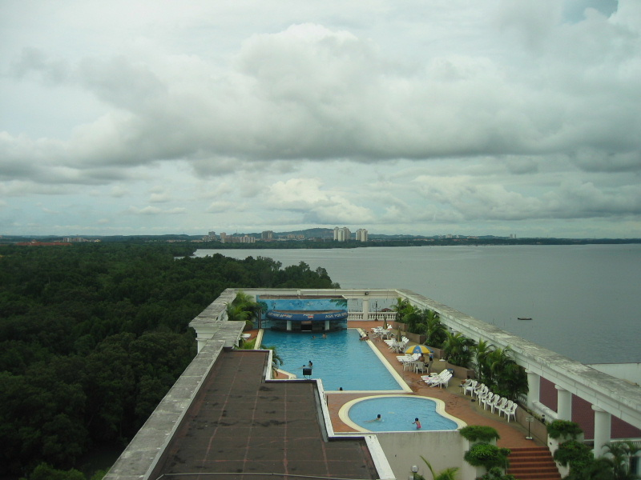
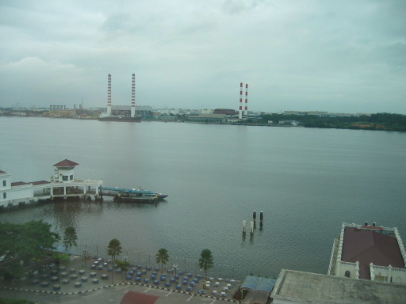
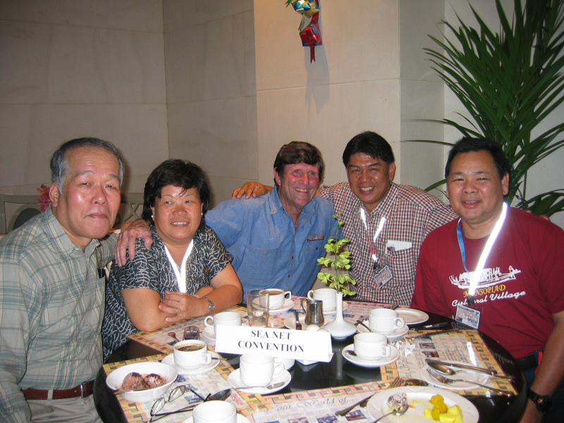
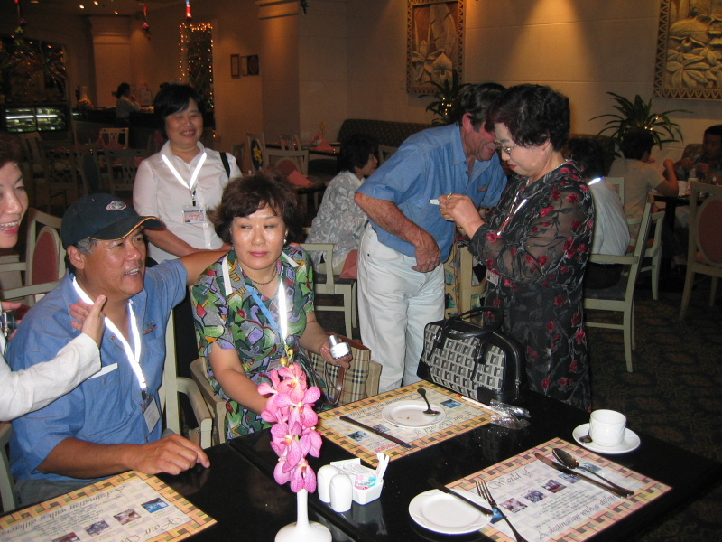
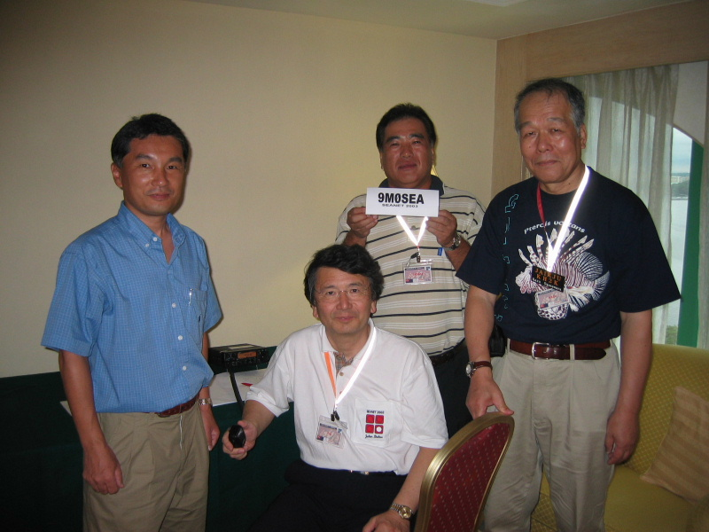
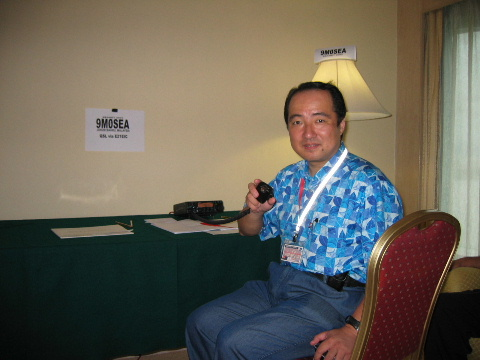
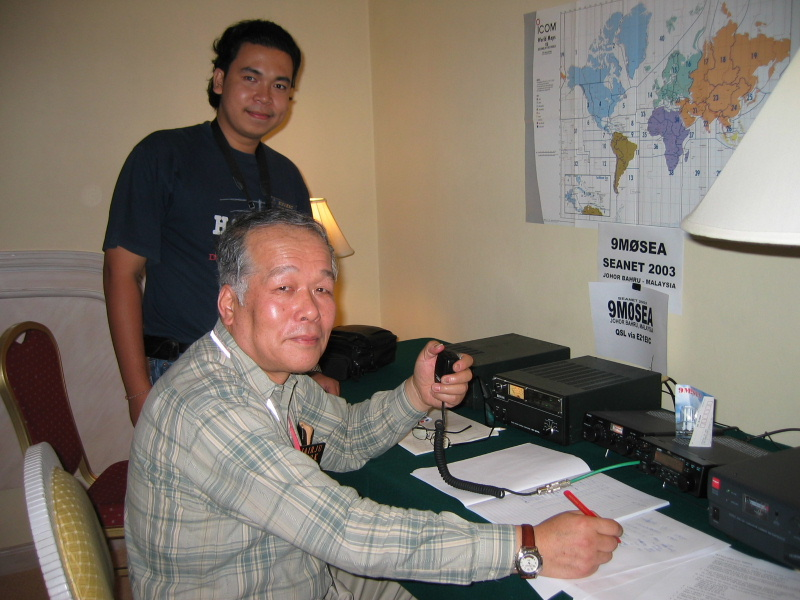
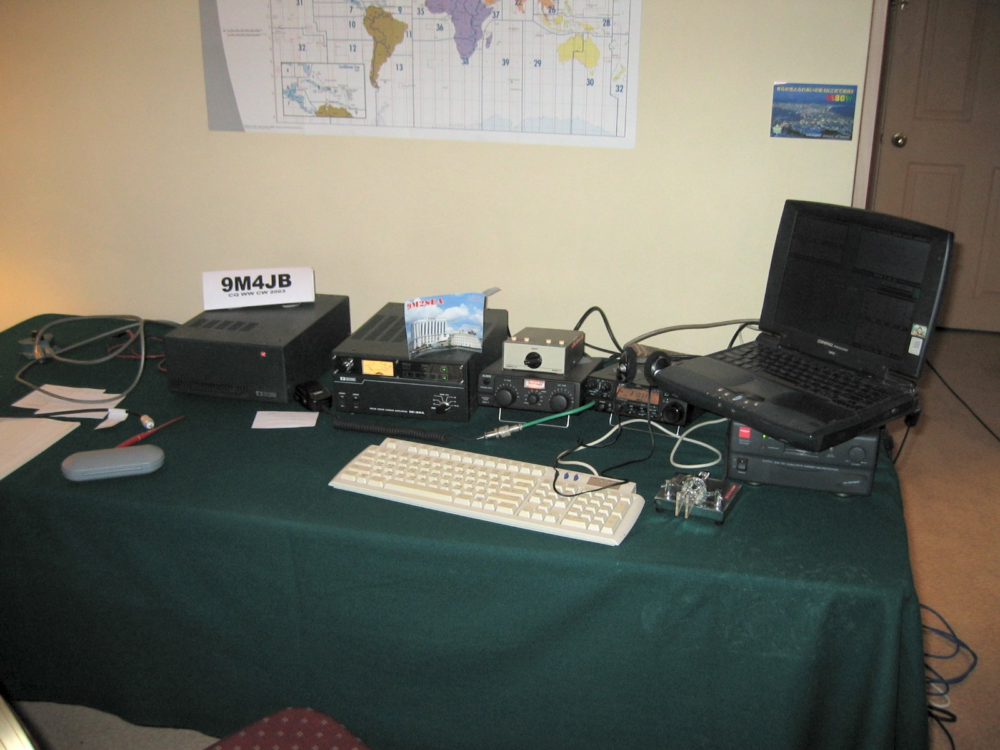
|
◎ Bus Tour(11/28)
今回の開催期間は4日間だったが、本格的なスケジュールが始まったのは11月28日(金曜日)から。 |
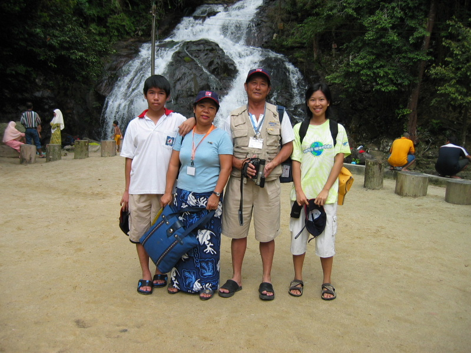
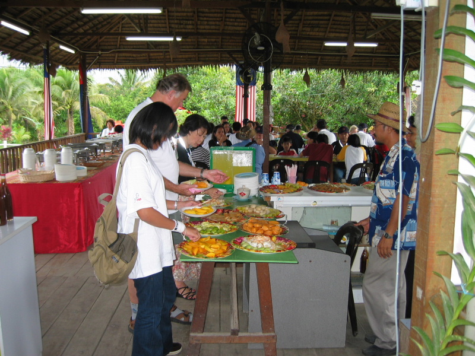
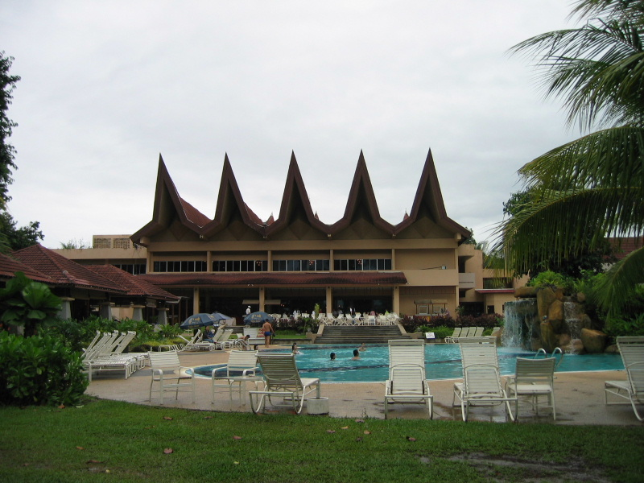
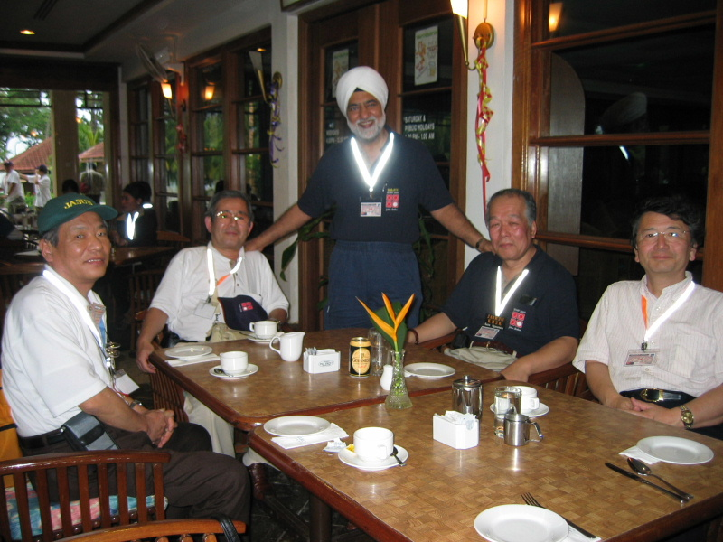
|
◎ GALA DINNER
11/29日(土)はバスで市内を見学。
途中全員で記念撮影、Royal Abu Bakar Museumの見学、ショッピングを楽しんだ。
19:30 Welcoming speech: By Dr ken.N.Singh(9M2KN=Chairman of Organising Committee)
Follow By SEANET Vidio By Godfrey Yin(9M6GY)
19:40 Speech by Guest of Honour.
19:50 Official Opening of SEANET 2003 Johor Bahru.
19:55 A presentation of the State of Johor.
20:00 Dinner and accompanied by Cultural show.
21:00 SEANET 2003 World Wide DX Contest Award.
(Presentation of Trophy and Certificate)
21:30 SEANET Social Activities.
(Presentation by Delegates from various countries)
23:30 Suprise Item!
|
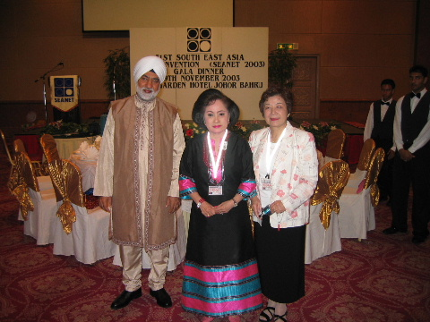 |
GaLa Dinner 写真集 |
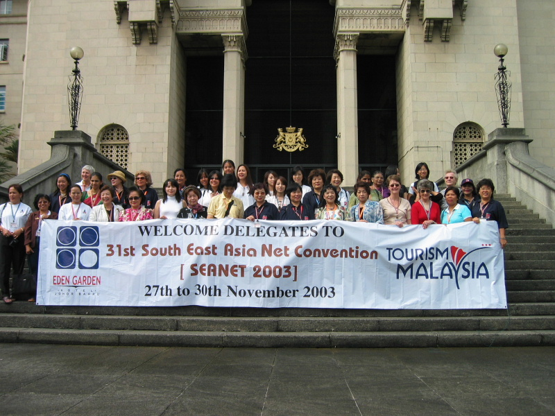
|
◎ 11/30日(日) SEANET最終日の11月30日(日)は午前9:00時からHL1IFMによる「WARC 2003」で100KHzの拡張が決まった40mバンドの解説。 「経済的な水素ガスを使ったハム用の新しい燃料」に関する解説が9M2PLによって披露された。 最後は2005年の次々回(2004年度はタイで開催が決定)のSEANET開催地を決める議題に入った。 2005年の開催には日本とインドから意志表示があり、立候補した日本(JA3AER)、 インド(VU2RCR)の両国から"開催招請"の誘致説明が行われた。 参加者全員の挙手による採決が行われ、25対23の僅差で2005年の開催地はインドのバンガロール(Ban Galore)に決定した。 |
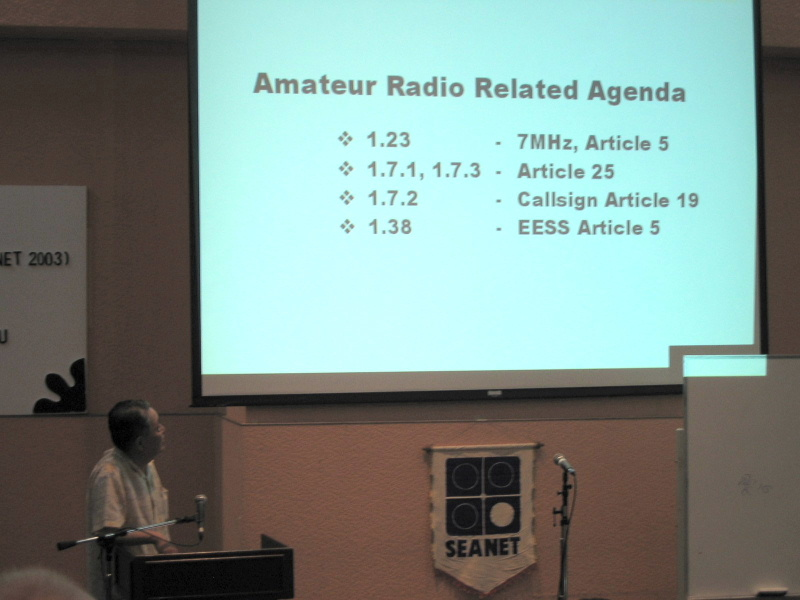
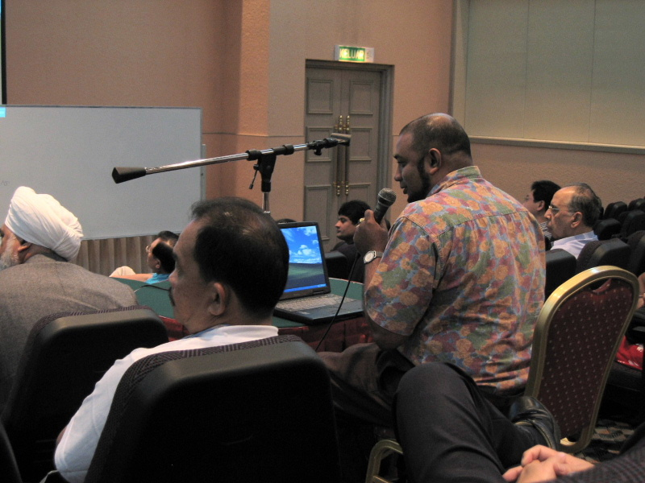
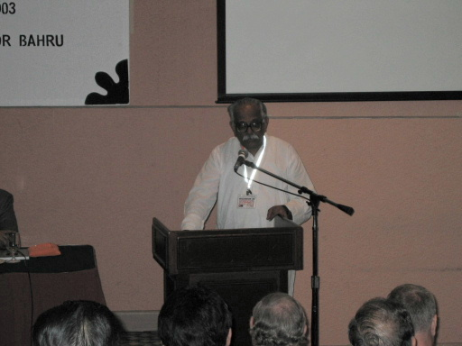
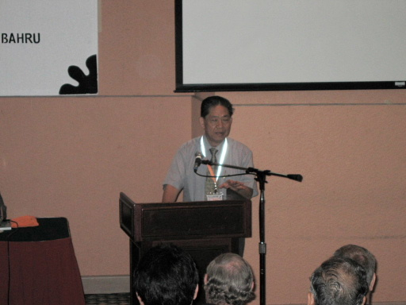
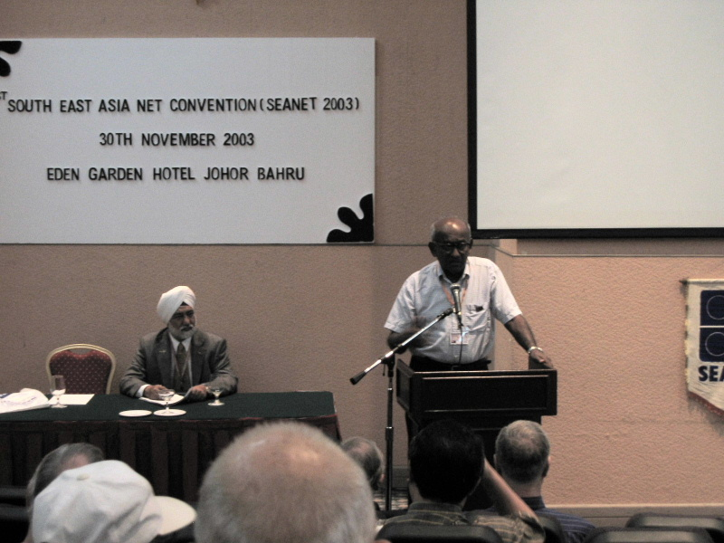
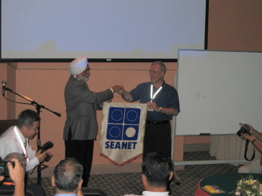
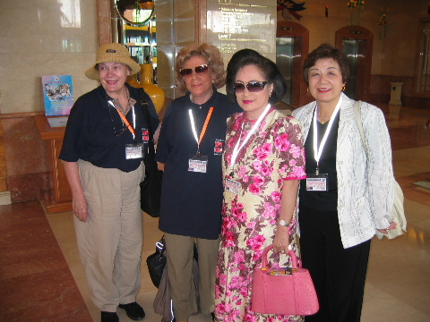 |
SEANET 写真集 |